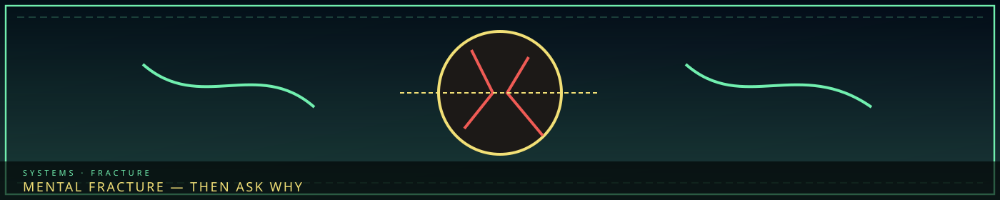

/// RAPID JUMP:
STATUS: ARCHIVE VERIFIED |
CLEARANCE: LEVEL-4 OVERSIGHT |
PROTOCOL: REVERIE DIRECTORATE
ARTICLE
DISCUSSION
SOURCE
HISTORY
YEAR 4,238 · DAWN OF HOPE
SYSTEMS & MECHANICS RECORD
Mental Fracture & Cognitive Therapy
Contents
“When someone Fractures, someone must ask: why. That is our job.”

 Void riskWhat leaks out
Void riskWhat leaks out TherapyWeep, then bind
TherapyWeep, then bindFracture Investigation — The Sorrow Seekers (슬픔을 찾는 자 — Seulpeum-eul Channeun Ja)
Overview
"When someone Fractures, someone must ask: why. That is our job."
The Sorrow Seekers are Somnarak's dedicated Fracture investigators — specialists who determine why a person Fractured, how it happened, and whether it could have been prevented.
Who They Are
The Sorrow Seekers are a small, elite unit — attached to the R.D. but operating independently. They report directly to the Director.
| Detail | Description |
|---|---|
| Size | ~50 personnel |
| HQ | Floor 4 — The Insight Forge |
| Leader | The Seeker Commander (reports to Director) |
| Authority | Can investigate any faction, any zone, any person |
What They Do
When someone Fractures:
| Step | Action | Who |
|---|---|---|
| 1 — Detection | Fracture event is reported | Wardens, R.D. personnel, citizens |
| 2 — Containment | Fractured being is contained | Wardens, R.D. Containment |
| 3 — Investigation | Sorrow Seekers determine cause | Seeker team deployed |
| 4 — Analysis | Root cause identified | Seeker Commander |
| 5 — Prevention | Measures taken to prevent recurrence | Relevant faction |
| 6 — Record | Case filed in the Archive | Seekers + Keepers |
What They Investigate
| Question | Purpose |
|---|---|
| Why did they Fracture? | Was it natural accumulation? Neglect? Abuse? |
| Who was responsible? | Was anyone at fault? A faction? A person? The system? |
| Could it have been prevented? | Was there a warning sign that was missed? |
| What can be done? | How do we prevent this from happening again? |
The Seeker Commander
Name: Dohyun (도현) — a name that means "wise and virtuous"; chosen for the one who must understand why people break
Role: Leader of the Sorrow Seekers. Reports directly to the Director.
Origin: A former Warden who watched too many people Fracture under their watch. They left the Wardens and joined the R.D. — not to contain entities, but to understand why people break.
The Sorrow: The Commander has investigated hundreds of Fracture cases. They have seen every kind of sorrow, every kind of failure, every kind of system collapse. They carry the weight of every case — every person who Fractured under their watch.
The Question: "If I can find out why people Fracture, can I prevent it? Or is Fracture inevitable?"
Case Types
| Case Type | Description | Frequency |
|---|---|---|
| Natural | Han accumulation over time — no one at fault | Common |
| Neglect | Veil failure, missed warning signs, inadequate care | Common |
| Abuse | Deliberate harm — forced Han exposure, Fray operations | Uncommon |
| System | The system itself caused the Fracture — debt, Veil failure | Uncommon |
| Unknown | Cause cannot be determined | Rare |
| Entity | A Sorrow Entity caused the Fracture | Rare |
The Seeker's Tools
| Tool | Description |
|---|---|
| The Sorrow Lens | A monocle that reveals the Han-patterns of a Fracture event — showing what happened |
| The Memory Probe | A device that reads the last memories of a Fractured being — before they transformed |
| The Timeline Thread | A tool that traces the Han-flow leading up to a Fracture — showing the buildup |
| The Verdict Scale | A device that measures responsibility — who was at fault, how much |
Fracture — When Sorrow Breaks You
Fracture — When Sorrow Breaks You
The process:
| Stage | Signs | Reversibility |
|---|---|---|
| 1 — Resonance | Emotional sensitivity, mood swings, whispers | Fully reversible |
| 2 — Manifestation | Grey hair, dark veins, altered eyes | Partially reversible |
| 3 — Transformation | Body reshapes — entity-like features | Difficult |
| 4 — Assimilation | Full Fracture — becomes a Sorrow Entity | Irreversible |
Who is at risk: Architects, M.A.W. users, Dream-divers, debt-heavy citizens, anyone.
Prevention: Rest, release, resonance dampeners, M.A.W. rotation, community.
Fractureed Humans (Those Who Break)
When individuals absorb too much Han without release, they Fracture.
- Not evil — often tragic figures
- Some retain consciousness; others become "pure" manifestations
- Architects are at high risk
Examples:
| Fractureed | Original Self | Transformation | Tragedy |
|---|---|---|---|
| The Smothering Mother | A parent who lost a child | Towering figure that traps children in embrace | "Protects" by suffocating |
| The Forgotten Soldier | A warrior whose sacrifice was erased | Phantom that forces others to remember through violence | Cannot rest until acknowledged |
| The Hollow Architect | A former Architect who Fractureed while building | Part building, part person — is a district | Trapped between roles forever |
| The Weeping Judge | A judge who sentenced innocents | Figure whose tears are verdicts — anyone touched is "guilty" | Seeking to be judged themselves |
CANONICAL RECORD: Sourced directly from the official Project Somnarak Worldbuilding Codex.
CANONICAL CROSS-LINKS & ATLAS CONNECTIONS